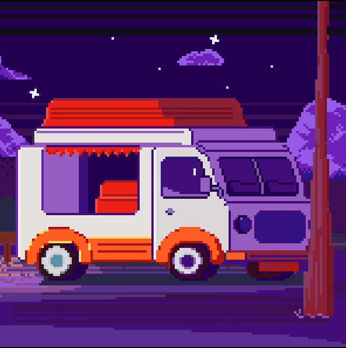

Фритрек и нулевой спринт: Подготовка к работе
</Html>

Это было самое начало пути. На этом этапе важно было проникнуться основами и настроиться на учёбу. И, возможно, подумать, как новые знания могут повлиять на будущее.
Первый спринт для меня был самым воодушевляющим, начало этого пути было одним из самых однозначных решений в моей жизни. И одним из самых верных, о чем я узнал сильно позже.